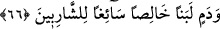
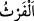

dinlememek, Allah’ın âyetleri konusunda münakaşa, çirkin söz ve cidâle dalmamak,
Şâri‘in dinlenmesini yasakladığı her haramdan uzak durmak.
Allah Teâlâ şöyle buyuruyor: “Allah’ın âyetlerinin inkâr edildiğini ve onlarla alay
edildiğini işittiğiniz zaman, onlar (bu sözü bırakıp) başka bir söze dalıncaya kadar
onlarla berâber oturmayın. Yoksa siz de onlar gibi olursunuz” (en-Nisa, 4/140)
Burada Allah’ın âyetlerini inkâra ve onlarla alay etmeye dalan, kâfir kişidir. Onunla
oturan münafık ise o kâfirin daldığı bu sözleri dinleyen kişidir. Aynı şekilde sıddîkların
ve ariflerin meclis ve toplantılarında oturan kişiler de Allah’tan gelen her hayırda
onlara ortaktırlar. Rasûlullah (s.a.) onlar hakkında şöyle buyuruyor:
“Onlar öyle bir topluluktur ki kendileri sâyesinde onlarla oturup kalkan şakî
olmaz.”[160]
Dolayısıyla kişi, dünyâda tâat ve şer‘î edebe riâyet ederek kiminle oturup kalkıyorsa
onunla berâber olduğu gibi âhirette de Hakk’ı doğrudan görme (muâyene) ve yakından
müşâhede ile olanlarla berâber olur. Allah Teâlâ’dan bizi dünyâda ve âhirette sâlihlerle
berâber kılmasını niyaz ederiz. Çünkü bol bol veren ve karşılıksız ihsan eden O’dur.
66. Şüphesiz sizin için hayvanlarda da büyük bir ibret vardır. Zira size, onların
karınlarındaki fışkı ile kan arasından (gelen), içenlerin boğazından kolayca geçen
hâlis bir süt içiriyoruz.
Ey insanlar! “Şüphesiz sizin için hayvanlarda” deve, sığır, koyun ve keçiden ibâret
dört tür hayvanda, yâni dört ayaklı hayvanların vücudunda “da büyük bir ibret vardır.”
Bu ibret, kişiyi cehâletten ilme sevk eder.
Burada sanki: “Bu ibret nasıldır?” diye bir soru sorulmuş ve bunun üzerine şöyle
buyrulmuştur: “Zira size, onların karınlarındaki fışkı ile kan arasından (gelen),
içenlerin boğazından kolayca geçen hâlis” üzerinde kanın rengi ve fışkının kokusu
bulunmayan saf “bir süt” yâni sütü sağılan hayvanların nîmet cinsinden karnında olan
sütü “içiriyoruz.”
“Onlar” zamiri, hayvanların bir bölümü olan dişi olanlarına râcidir. Çünkü bütün
hayvanlar süt vermez. Ya da Kisâî’nin dediği gibi zamir, zikredilen hayvanların
karınlarındakilere râcidir.
“__WORD__ işkembede kalan yem artığı ve posasıdır. Hayvanın işkembesi, insanın midesi
yerindedir.
Denilir ki: Süt kimsenin boğazında kalmamıştır. Yiyecek ve içecekler arasında ondan